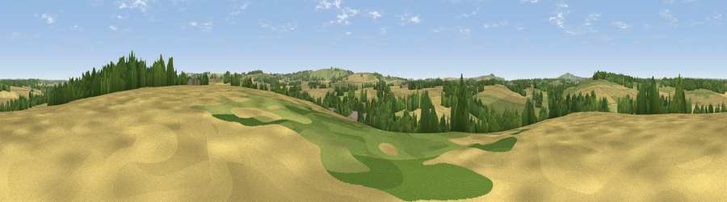

Viewpoint near Wilton
#37125 in England · top 77% of its area beats it · near WiltonWhere it is
The exact computed spot (SU 26725 62075). Click the marker for map links.
The view, rendered

A 360° render of this exact spot computed from the terrain model, tree cover and land cover — summer colours, afternoon light, calibrated against photographs of famous viewpoints. Real trees, hedges and buildings will differ in detail.
The panorama
Grey silhouette: terrain skyline in each direction (720 bearings, Earth curvature and refraction included). Dashed green: skyline with trees (+15 m) and buildings (+8 m) as obstacles. Blue strip: how far the ground is visible on each bearing.
Where the view opens
Wedge length = distance to the farthest visible ground on that bearing (vegetation-aware). Rings at 10, 25 and 50 km.
What fills the view
50% cropland · 32% grassland · 17% woodland ·
Angular shares of the visible panorama (visual magnitude), not map area. Landscape diversity 0.45 (0–1 Shannon).
Key numbers
More beautiful places nearby
The staircase of upgrades: each row has a higher view potential than everything closer. Driving times are estimates from straight-line distance, calibrated against real road routing — check an actual route before setting out.
| Place | Direction | Drive | Score |
|---|---|---|---|
| Viewpoint near East Grafton | S · 3 km | ~8 min | 57.4 |
| Viewpoint near Tidcombe | S · 4 km | ~10 min | 61.3 |
| Wexcombe Down | SSE · 4 km | ~10 min | 66.9 |
| Viewpoint near Ham | E · 8 km | ~16 min | 67.2 |
| Inkpen Hill | E · 9 km | ~18 min | 69.8 |
| Martinsell viewpoint | WNW · 9 km | ~18 min | 77.3 |
| Viewpoint near Berwick St John | SW · 54 km | ~75 min | 78.2 |
| Viewpoint near Buriton | SE · 61 km | ~84 min | 80.0 |
51.35712, -1.61758 · source: screening · position refined by local search. Computed location — check access rights before visiting.